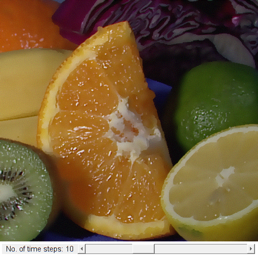

Anisotropic Diffusion
This sample demonstrates Perona-Malik anisotropic diffusion.
Sources:
function varargout = anisodiff_demo_gui(im) % load source image if nargin < 1 src = cv.imread(fullfile(mexopencv.root(),'test','fruits.jpg'), 'Color',true); elseif ischar(im) src = cv.imread(im, 'Color',true); else src = im; end % not too big if size(src,1) > 480 src = cv.resize(src, [round(480*size(src,2)/size(src,1)), 480]); end % create the UI h = buildGUI(src); if nargout > 0, varargout{1} = h; end end function onChange(~,~,h) %ONCHANGE Event handler for UI controls % retrieve current values from UI controls niters = round(get(h.slid, 'Value')); set(h.txt, 'String',sprintf('No. of time steps: %2d',niters)); % apply filtering dst = cv.anisotropicDiffusion(h.src, ... 'Alpha',1.0, 'K',0.02, 'Iterations',niters); % show result set(h.img, 'CData',dst); drawnow; end function h = buildGUI(img) %BUILDGUI Creates the UI % parameters niters = 10; sz = size(img); sz(2) = max(sz(2), 250); % minimum figure width % build the user interface (no resizing to keep it simple) h = struct(); h.src = img; h.fig = figure('Name','Anisotropic Diffusion', ... 'NumberTitle','off', 'Menubar','none', 'Resize','off', ... 'Position',[200 200 sz(2) sz(1)+30-1]); if ~mexopencv.isOctave() %HACK: not implemented in Octave movegui(h.fig, 'center'); end h.ax = axes('Parent',h.fig, 'Units','pixels', 'Position',[1 30 sz(2) sz(1)]); if ~mexopencv.isOctave() h.img = imshow(img, 'Parent',h.ax); else %HACK: https://savannah.gnu.org/bugs/index.php?45473 axes(h.ax); h.img = imshow(img); end h.txt = uicontrol('Parent',h.fig, 'Style','text', ... 'Position',[5 5 150 20], 'FontSize',11, ... 'String',sprintf('No. of time steps: %2d',niters)); h.slid = uicontrol('Parent',h.fig, 'Style','slider', ... 'Position',[155 5 sz(2)-155-5 20], 'Value',niters, ... 'Min',0, 'Max',30, 'SliderStep',[1 5]./(30-0)); % hook event handlers, and trigger default start set(h.slid, 'Callback',{@onChange,h}, ... 'Interruptible','off', 'BusyAction','cancel'); onChange([],[],h); end